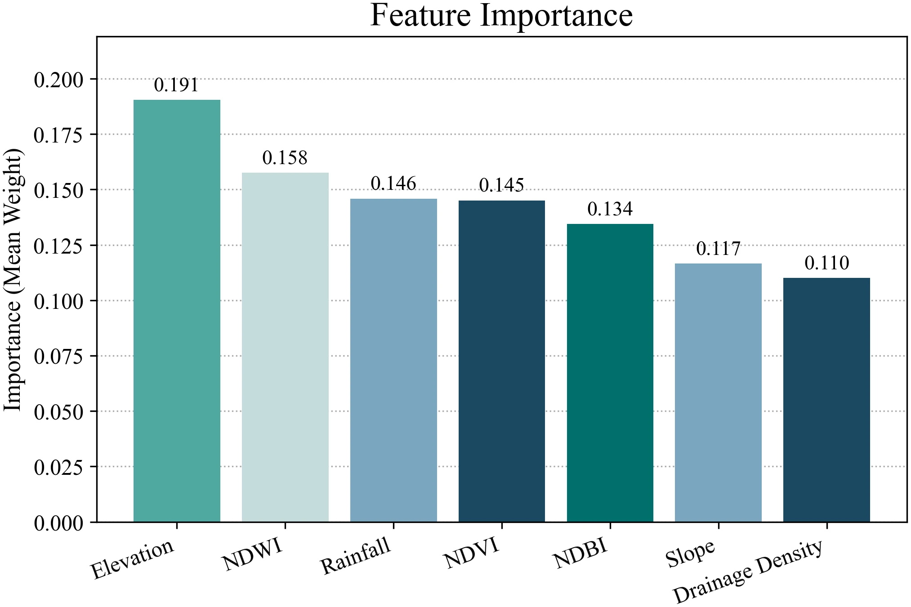
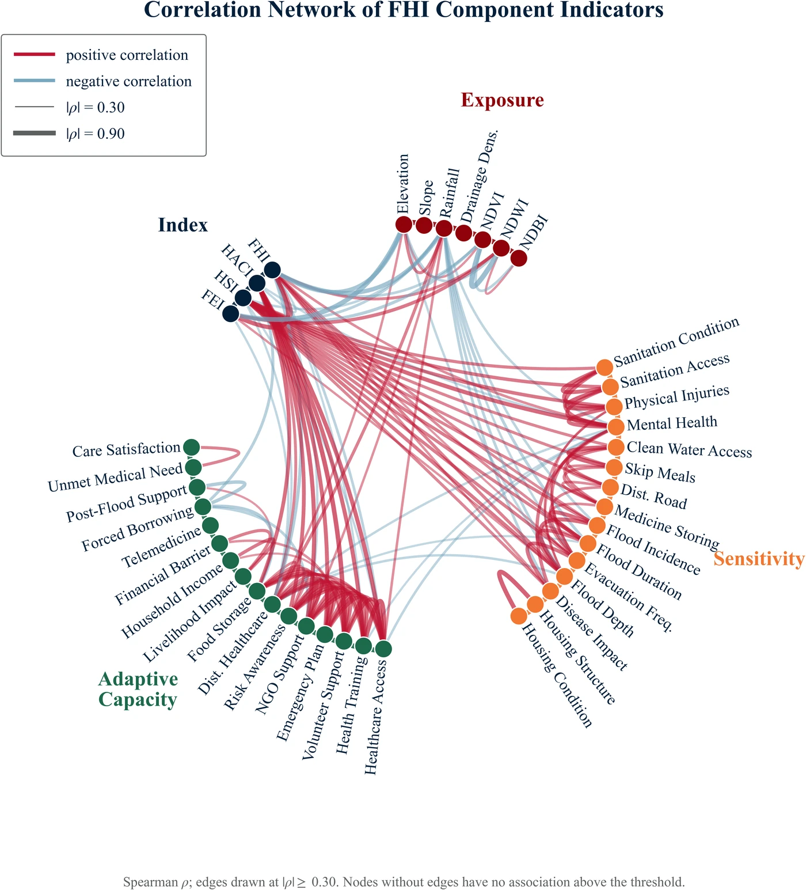
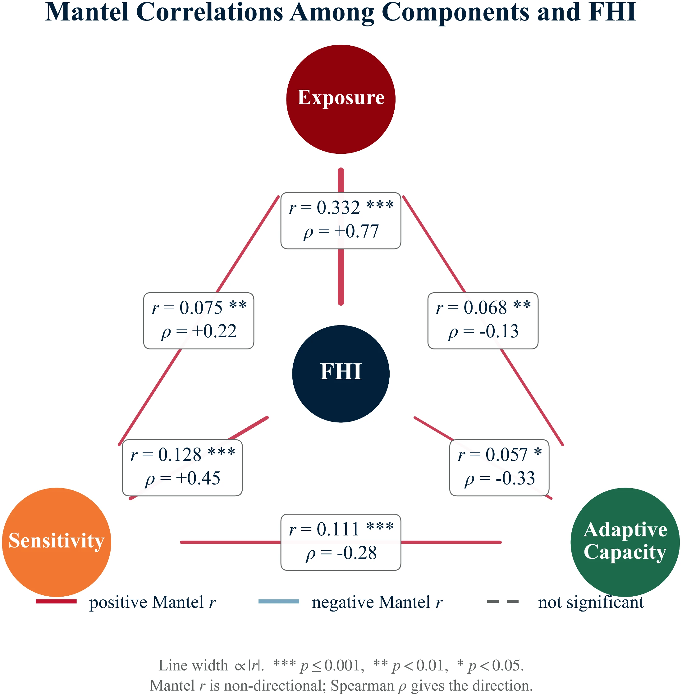

Overview
Floods hit the haor wetlands of Sunamganj every year, but most flood-health assessments treat hazard, social vulnerability, and health outcomes as separate problems. This study builds a composite Flood Health Impact (FHI) index for Tahirpur Upazila that fuses three constructs on a common scale: a Flood Exposure Index (FEI) from a feed-forward neural network trained on terrain, hydrology, and spectral predictors; a Health Sensitivity Index (HSI) and Health Adaptive Capacity Index (HACI) extracted via exploratory factor analysis of a 384-household survey, triangulated against ten key-informant interviews with local health workers.
The three indices combine multiplicatively (FHI = FEI × HSI ÷ HACI) rather than by simple addition, consistent with IPCC disaster-risk theory, where exposure and sensitivity jointly amplify risk while adaptive capacity attenuates it. That formulation is what lets the index flag conjunctive risk: places where physical exposure and health vulnerability are both high but the local health system's capacity to respond is weak.

Key Findings
- The flood exposure model performs strongly (R² = 0.843, AUC = 0.956 on held-out validation), with elevation the dominant predictor, followed by NDWI and rainfall, confirming low-lying, water-covered terrain drives exposure most.
- Risk is sharply terrain-patterned: Dakshin Sreepur and Uttar Sreepur are basin-floor hotspots (48.86% and 46.77% of area in High to Very High FHI), while Uttar Badaghat, at slightly higher elevation with better drainage, is 84.67% Very Low risk.
- Women show significantly lower adaptive capacity and higher composite risk than men (median HACI 0.36 vs 0.43; median FHI 0.36 vs 0.29; adjusted p = 0.002) despite comparable health sensitivity; the disadvantage runs through capacity to respond, not exposure to harm.
- Risk doesn't decline steadily with income: both sensitivity and composite risk peak in the 10,000–20,000 BDT/month band, a "just enough to lose, not enough to absorb it" pattern in lower-middle-income households.
- Waterborne and vector-mediated illness (diarrhea, cholera, malaria, dengue) accounts for 45.1% of reported morbidity, and 82.81% of respondents reported flood-related psychological impact; the burden is physical and psychosocial from the start, not sequential.
- Healthcare-access barriers are overwhelmingly supply-side (lack of service availability at 37.68% and transport interruption at 22.32%), while lack of awareness accounts for only 2.74%, meaning infrastructure and continuity of care, not health education, is the binding constraint.




Model Validation
Because the composite index is a deterministic function of its three inputs, internal coherence matters as much as accuracy. Two checks: a correlation network of every component indicator, and permutation-based Mantel tests between the exposure, sensitivity, and adaptive-capacity blocks.


Status
This manuscript is developed from my M.S. thesis and is currently being finalized for journal submission. The framework has been validated internally (correlation network, Mantel congruence tests, and agreement with self-reported disease burden all support the composite's coherence) but has not yet been tested outside Tahirpur Upazila; external validation across other haor and coastal settings is identified as necessary follow-up work.